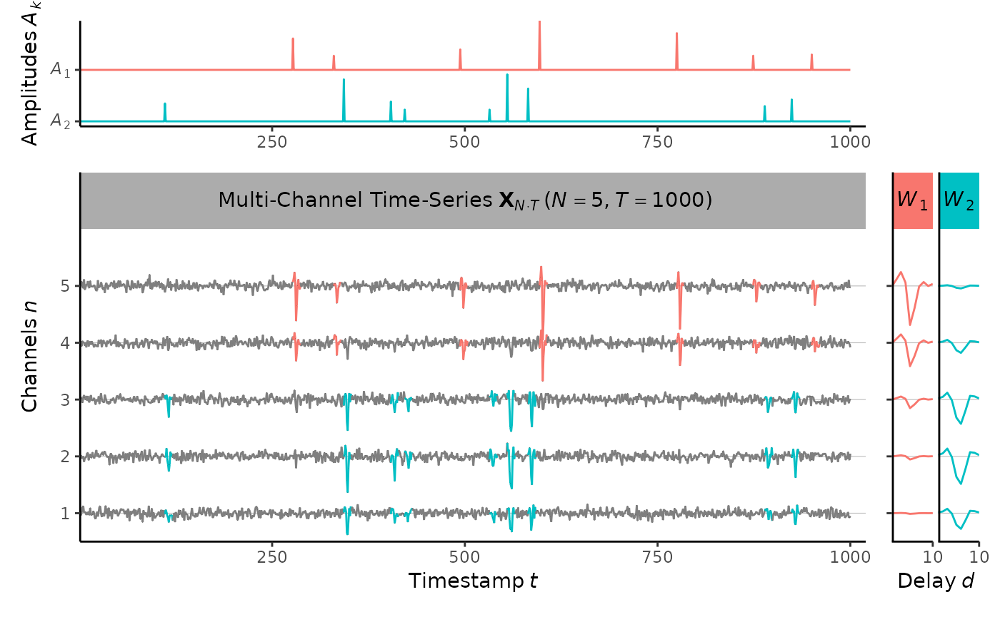
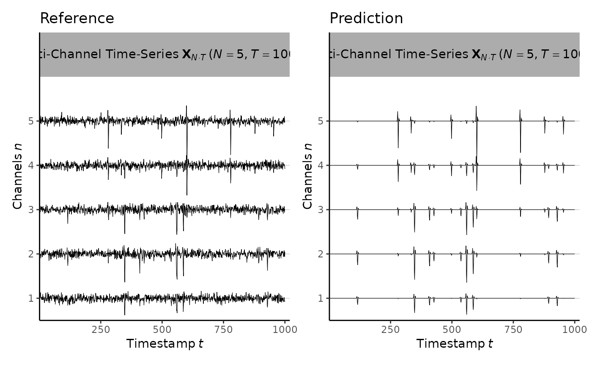

knitr::opts_chunk$set(collapse = TRUE, comment = "#>", message = FALSE)
library(convNMF)1. Generate synthetic data
set.seed(1)
init <- generate(
num_channels=5, # number of channels
num_samples=1000, # number of samples
sample_freq=1000, # number of samples per unit time
num_neurons=2, # number of neurons
len_wavelet=10, # length of spikes
mean_spikes=10, # expected number of spikes per unit time
mean_amplitude=15, # alpha/beta of Gamma (alpha, beta)
shape_amplitude=3, # alpha of Gamma (alpha, beta)
noise_std=1 # MVN(0, noise_std^2)
)
plot(init)
# plot(init@data)
# plot(init@amplitudes)
# plot(init@wavelets)
# plot(generate_wavelets(2, 5, 10))2. Fit ConvNMF model
est <- convNMF(
data=init@data@value, # multi-channel time-series array (NxT)
sample_freq=1000, # number of samples per unit time
num_neurons=2, # number of neurons
len_wavelet=10, # length of spikes
mean_spikes=10, # expected number of spikes per unit time
mean_amplitude=15, # alpha/beta of Gamma (alpha, beta)
shape_amplitude=3, # alpha of Gamma (alpha, beta)
noise_std=1, # MVN(0, noise_std^2)
amp_rate=5, # detect amplitudes (amp_rate) times higher than SD
wavelet_rank=1, # dimension reduction in SVD
num_iters=50, # number of iterations
tol=1e-04, # tolerance level
weight_wavelets=FALSE # re-normalize wavelets for behavioral data
)
#> Using (N x T) = (5 x 1000) data.
#> Generating (K x N x D) = (2 x 5 x 10) wavelets.
#> Initializing (K x T) = (2 x 1000) amplitudes.
#> Iteration [8/50] Convergence detected!
plot(est)
plot(est@lls, type="b", xlab="Iteration", ylab="Normalized Log Likelihood")3. Evaluate the model

sprintf("logLik = %.2f",logLik(est))
#> [1] "logLik = -7309.34"
sprintf("%% power explained = %.2f",power_explained(est))
#> [1] "% power explained = 0.41"
sprintf("Sequenciness = %.2f",sequenciness(est))
#> [1] "Sequenciness = 0.92"
confusion_matrix(init, est)
#> (Prediction)
#> Positive Negative
#> (Reference) Positive 420 0
#> Negative 26 4554
#> ------------------------------------------
#> Accuracy: TP/(TP+FN+FP) = 0.94
#> Recall: TP/(TP+FN) = 0.94
#> Precision: TP/(TP+FP) = 1.00
#> Miss rate: FN/(TP+FN) = 0.06
#> False discovery rate: FP/(TP+FP) = 0.00
# extract_spikes(est) # based on 95% spikes4. Estimate optimal K based on model stability
max_K <- 5
diss_list <- rep(NA, max_K)
for(K in 1:max_K){
diss_list[K] <- compute_diss_matrix(est, num_neurons=K)$mean_diss
print(sprintf("%d: %.2f",K,diss_list[K]))
}
#> [1] "1: 0.03"
#> [1] "2: 0.05"
#> [1] "3: 0.23"
#> [1] "4: 0.36"
#> [1] "5: 0.45"
plot(diss_list, type="b", xlab="K", ylab="Dissimiliarity")